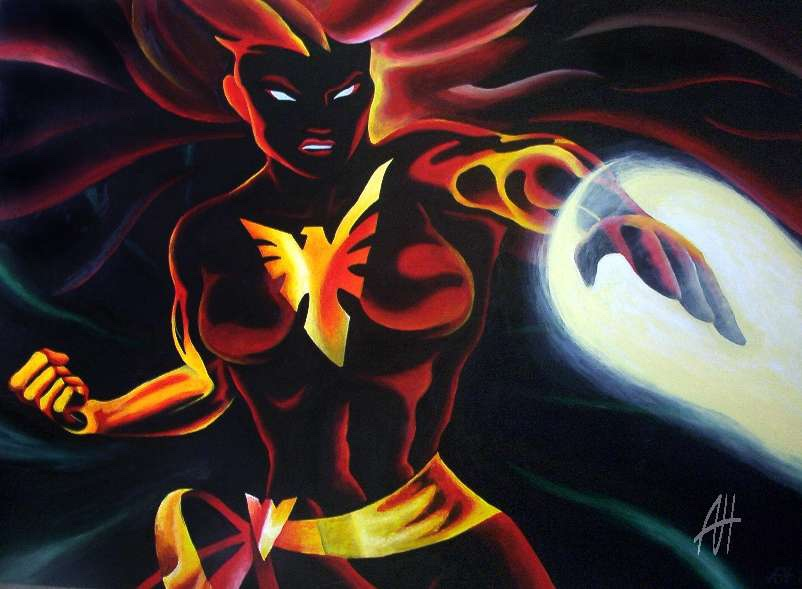
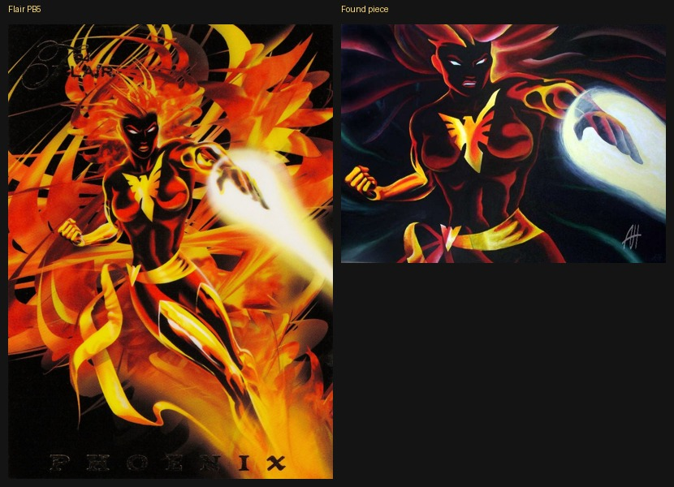
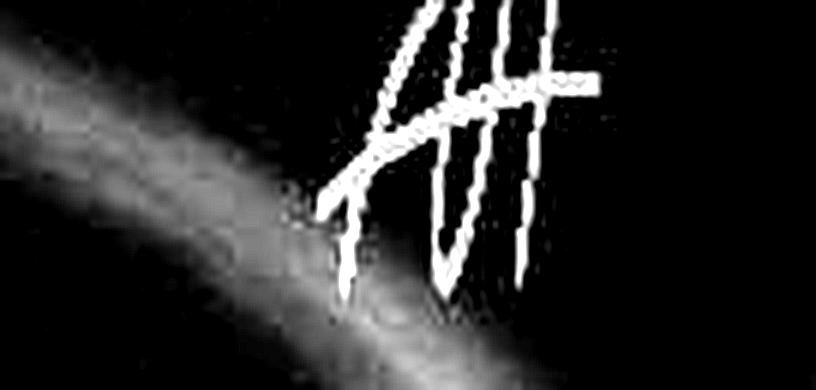
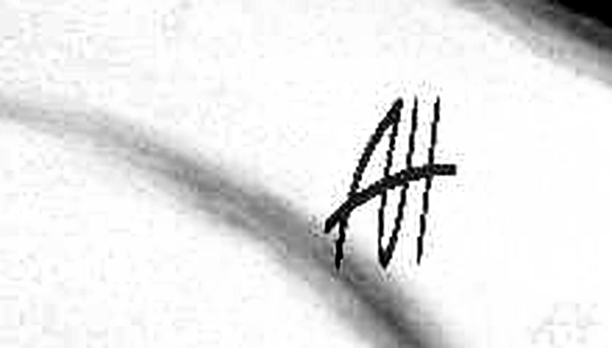

← Phoenix source hunt · Matching board
Origin solved — Adham Hussain fan painting of Flair PB5
This lead is not Fleer’s source art. The circulating “signed” 802×589 Dark Phoenix is a 2006 fan recreation of the already-published 1994 Flair Powerblast #5 card, painted by New Orleans hobbyist Adham Hussain (DeviantArt Admahum / site AddHam2it). The interlocking AH monogram is his initials — not Adam Hughes.


Primary source
- DeviantArt: Admahum — Dark Phoenix (
fav.me/di8q5m), published 2006-03-20. - Caption (verbatim gist): “I just wanted to paint a 3ft × 4ft painting of the Marvel trading card because the card looked awesome… destroyed in the Hurricane Katrina aftermath.”
- 2010 comment on the DA page: “awesome rendition of the 94 flair card.”
- Artist: Adham Hussain — addham2it.com (New Orleans convention fan-art prints).
- Pixels: DA full download is byte-identical to dreager1’s uncredited
dark_phoenix.jpg(46,163 bytes, md538be99fed9bbda034ce3baecae5af691). Found scan is the same frame, lighter recompress (mean RGB diff ≈ 0.29).
Signature read — corrected


- Interlocking AH = Adham Hussain. Same glyph appears on his other 2006-03-20 Katrina-era recreations (e.g. Silver Myr of Kev Walker’s MTG card; Saint Michael).
- Adam Hughes hypothesis: RULED OUT. No AH! bang; style/context are fan card recreations, not Hughes commissions. CAF Chris Klamer “Dark Phoenix (AH)” remains a different pencil portrait.
What this means for SOURCE_ART.pb05
- Pose MATCH to the card was expected — Adham copied Flair PB5.
- This painting is a post-1994 echo (painted for personal display; posted 2006). It cannot be the Fleer production source.
- Fleer’s original PB5 artist / unused print source is still UNKNOWN. The hunt continues for pre–June 1994 material that Fleer CGI’d into the Powerblast plate.
SOURCE_ART.pb05stays empty.
Full hunt log: archive-hunt/ORIGIN_ADMAHUM.md. Matching board entries #94–99 updated.
Research notes · 2026-10-21 · credit Adham Hussain for the fan painting; do not credit Adam Hughes; do not install as PB5 source.